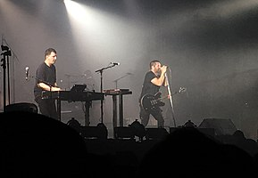
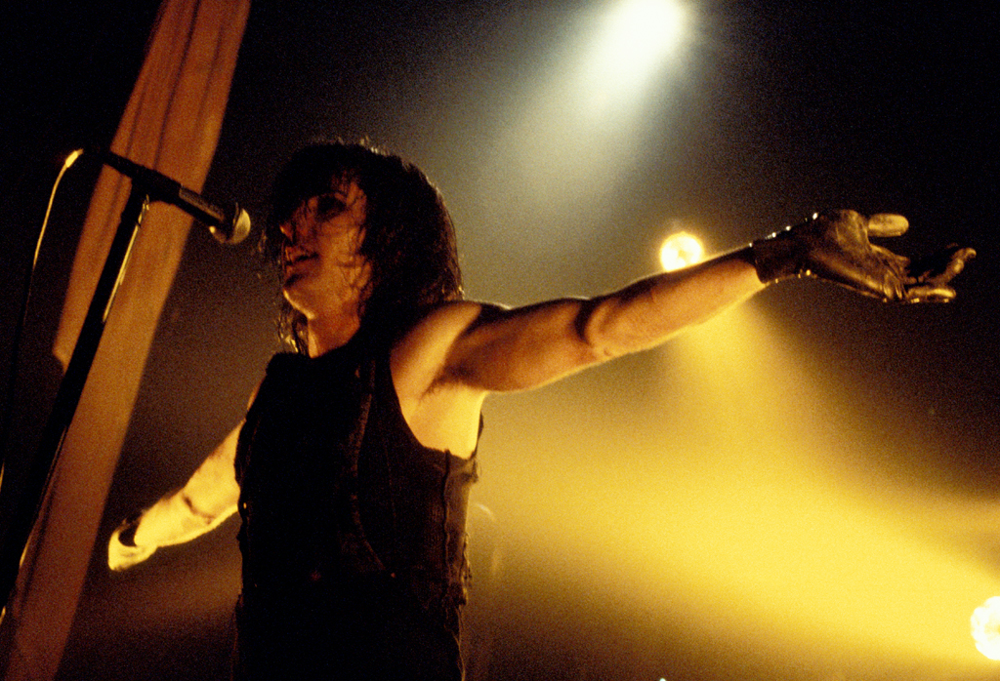
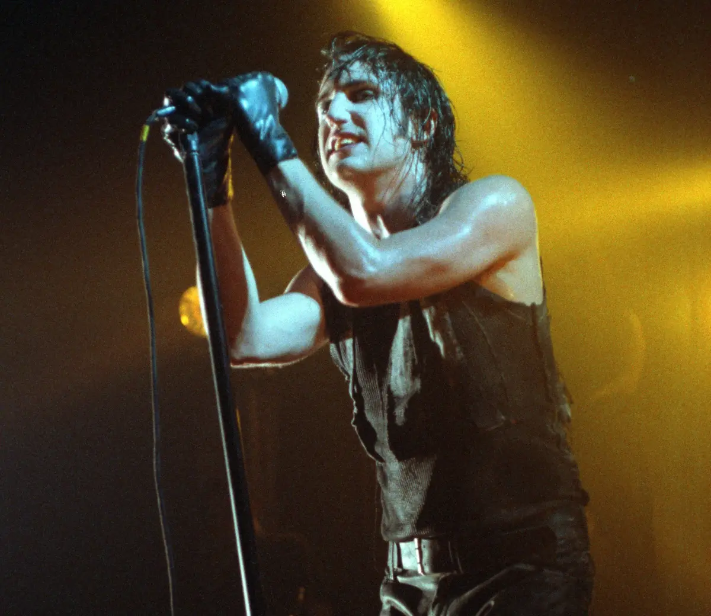

Nine Inch Nails
Nine Inch Nails, commonly abbreviated as NIN and stylized as NIИ, is an American industrial rock band formed in Cleveland in 1988. Singer, songwriter, multi-instrumentalist, and producer Trent Reznor was the only permanent member of the band until his frequent collaborator, Atticus Ross, joined in 2016. The band's debut album, Pretty Hate Machine (1989), was released via TVT Records. After disagreeing with TVT about how to promote the album, the band signed with Interscope Records and released the EP Broken (1992). The following albums, The Downward Spiral (1994) and The Fragile (1999), were released to critical acclaim and commercial success.
Following a hiatus, Nine Inch Nails resumed touring in 2005 and released the album With Teeth (2005). Following the release of the album Year Zero (2007), the band left Interscope after a feud. Nine Inch Nails continued touring and independently released Ghosts I–IV (2008) and The Slip (2008) before a second hiatus. Their eighth album, Hesitation Marks (2013), was followed by a trilogy which consisted of the EPs Not the Actual Events (2016) and Add Violence (2017) and their ninth album Bad Witch (2018). In 2020, Nine Inch Nails simultaneously released two further installments in the Ghosts series: Ghosts V: Together and Ghosts VI: Locusts.
When touring, Reznor typically assembles a live band to perform with him under the Nine Inch Nails name. This live band has varied over the decades, with various members leaving and returning; the most recent lineup consists of Robin Finck (who initially joined in 1994), Alessandro Cortini (who initially joined in 2005), and Ilan Rubin (who initially joined in 2009) alongside Reznor and Ross. The band's concerts are noted for their extensive use of thematic visual elements, complex special effects, and elaborate lighting. Songs are often rearranged to fit any given performance, and melodies or lyrics of songs that are not scheduled to be performed are sometimes assimilated into other songs.
Nine Inch Nails have sold over 20 million records and been nominated for 13 Grammy Awards, winning for the songs "Wish" in 1992 and "Happiness in Slavery" in 1996. Time magazine named Reznor one of its most influential people in 1997, while Spin magazine has described him as "the most vital artist in music". In 2004, Rolling Stone placed Nine Inch Nails at No. 94 on its list of the 100 greatest artists of all time. Nine Inch Nails were inducted into the Rock and Roll Hall of Fame in 2020, after being nominated in 2014 (their first year of eligibility) and again in 2015.

Atticus Ross (left) and Trent Reznor (right) performing in October 2018
The band's logo, designed by Reznor and Gary Talpas
Reznor performing during the Self-Destruct tour, circa 1994–1995
Discography
- Pretty Hate Machine (1989)
- Broken – EP (1992)
- The Downward Spiral (1994)
- The Fragile (1999)
- With Teeth (2005)
- Year Zero (2007)
- Ghosts I–IV (2008)
- The Slip (2008)
- Hesitation Marks (2013)
- Not the Actual Events – EP (2016)
- Add Violence – EP (2017)
- Bad Witch (2018)
- Ghosts V: Together (2020)
- Ghosts VI: Locusts (2020)

dsa